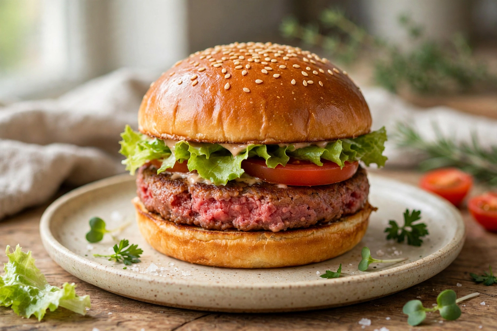

| Impossible Foods | |
|---|---|
 | |
| Founded | 2011; Redwood City, California, US |
| Founder | Patrick O. Brown |
| Headquarters | Redwood City, California |
| Products | Plant-based meat substitutes: burgers, sausage, nuggets, chicken and pork alternatives |
| Key ingredient | Soy leghemoglobin ("heme") produced by engineered yeast |
Impossible Foods Inc. is an American food technology company that develops plant-based substitutes for meat products. Founded in 2011 by Stanford biochemistry professor Patrick O. Brown, the company's stated mission is to end the use of animals in food production by 2035 by making plant-based products that match meat in taste, texture and nutrition. Its flagship product, the Impossible Burger, was launched in 2016 and became one of the best-known products of the modern plant-based meat industry, alongside rival Beyond Meat.
Brown, a professor at Stanford University School of Medicine and co-founder of the Public Library of Science (PLOS), concluded during a sabbatical that industrial animal agriculture was the largest single driver of environmental damage that could be addressed by a market-based product. He founded the company in 2011 in Redwood City, California, assembling scientists to reverse-engineer the molecular basis of meat flavour and texture. The company raised large venture rounds from investors including Khosla Ventures, Bill Gates, Google Ventures and Temasek, ultimately raising close to $2 billion and reaching a reported valuation of about $7 billion in 2021.
Impossible's researchers identified heme — specifically the iron-containing molecule in myoglobin and haemoglobin — as the key molecule giving meat its characteristic flavour and aroma. The company produces soy leghemoglobin, a plant heme protein naturally found in soybean root nodules, by inserting the soybean gene into the yeast Pichia pastoris and fermenting it at scale. Combined with plant proteins (originally wheat and potato protein, later mainly soy protein), coconut and sunflower oils and binders, the heme allows the burger to brown, sizzle and "bleed" like beef. The use of a genetically engineered ingredient attracted regulatory scrutiny: the US Food and Drug Administration issued a "no questions" letter on soy leghemoglobin's safety in 2019, and it was approved as a colour additive, while authorisation in the European Union and some other markets proceeded more slowly.
The Impossible Burger debuted in upscale restaurants such as New York's Momofuku Nishi in 2016, then expanded into thousands of restaurants, including a major partnership with Burger King for the Impossible Whopper (2019). Retail grocery sales began in 2019. Subsequent products include Impossible Sausage (adopted by chains such as Starbucks), plant-based chicken nuggets, pork and meatballs. In the early 2020s the company, like the wider alternative-protein sector, faced slowing US retail sales and intense competition, and it underwent layoffs and strategic refocusing while expanding internationally.